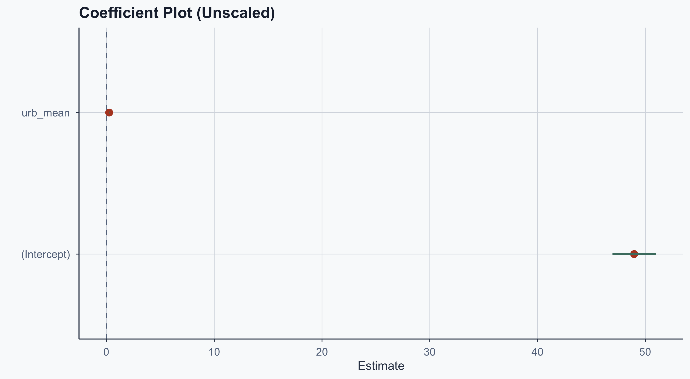
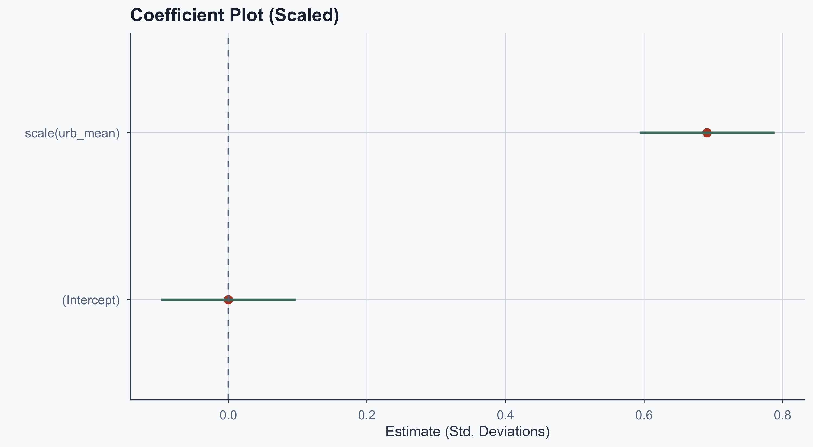
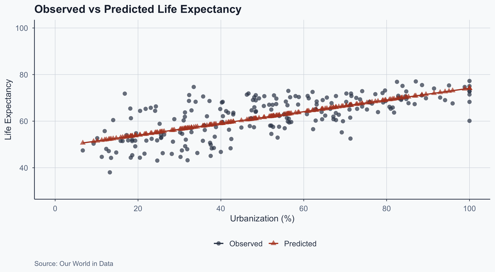
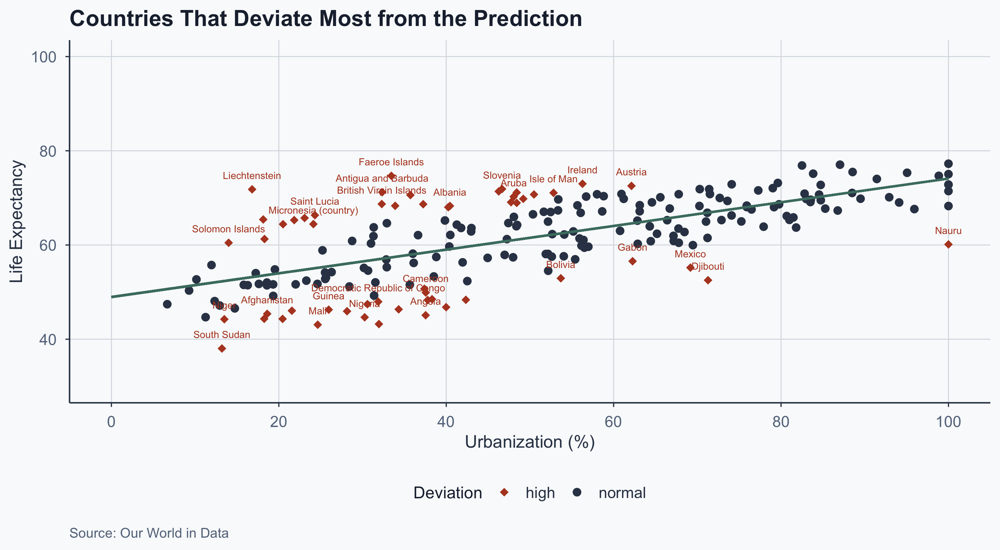
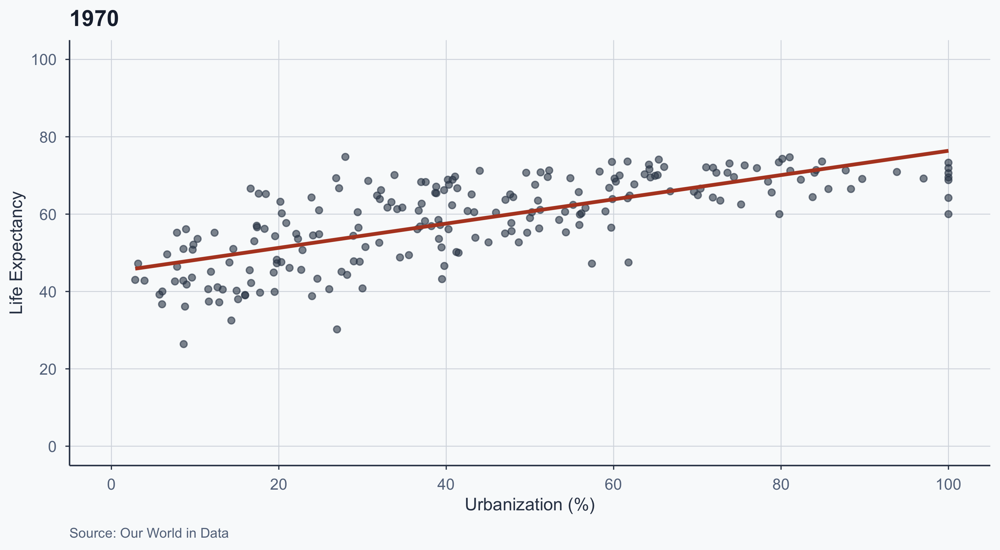
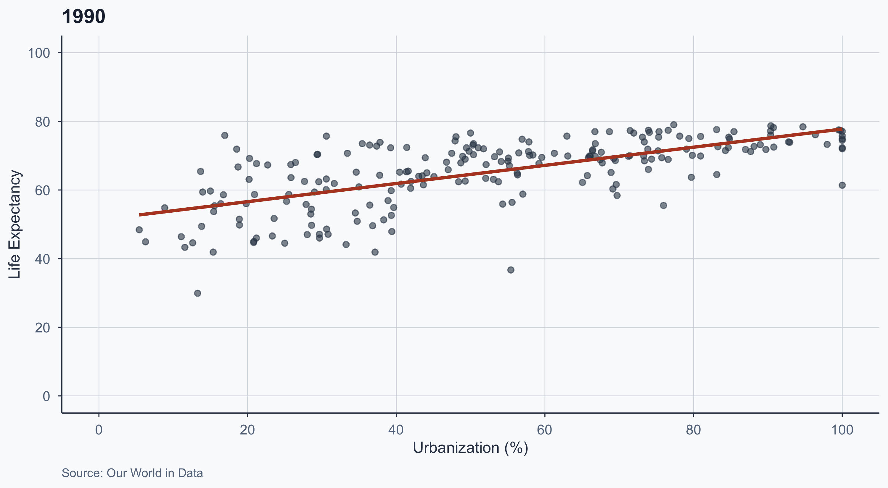
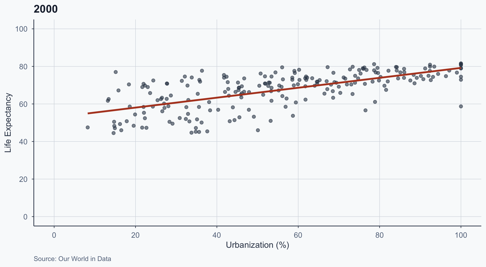
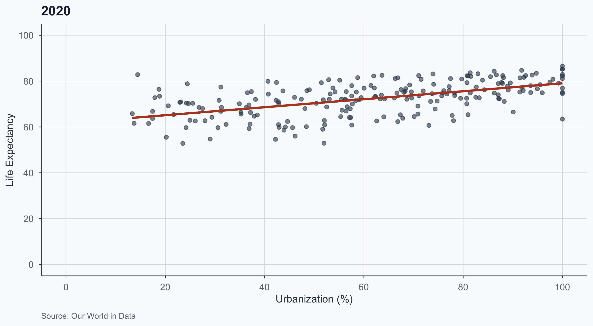
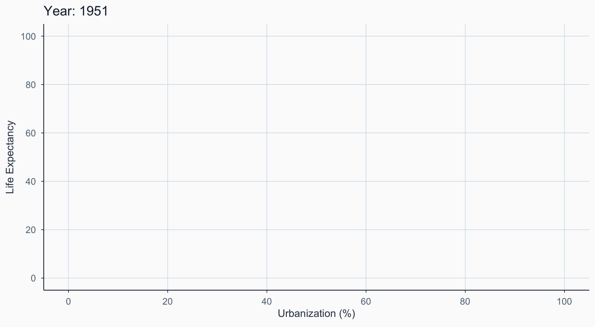

Statistical Analysis
Lab 9: Bivariate Regression
![]()
Intro
Setup
Open a new Quarto document and use this preamble:
---
title: "Lab 9"
author: "Your Name"
date: today
format:
html:
toc: true
number-sections: true
colorlinks: true
smooth-scroll: true
embed-resources: true
---Render and save under “week9” in your “stats” folder.
Today’s Roadmap
- Correlation → Regression: from \(r\) to \(\hat{y} = a + bx\)
- Regression tables with
modelsummary - Coefficient plots and why scaling matters
- Predicted values & residuals: what the model gets right and wrong
- Change over time: animated scatterplots
Loading & Cleaning the Data
Loading the Datasets
Download links if needed:
Cleaning Life Expectancy
Average by country (post-1900), remove non-countries:
life_expectancy_df <- subset(life_expectancy_df, Year > 1900)
life_expectancy_df2 <- life_expectancy_df %>%
dplyr::group_by(Entity, Code) %>%
dplyr::summarize(
life_exp_mean = mean(Life.expectancy.at.birth..historical.)
)
weird_labels <- c("OWID_KOS", "OWID_WRL", "")
clean_life_expectancy_df <- subset(
life_expectancy_df2, !(Code %in% weird_labels)
)
head(clean_life_expectancy_df, n = 5)# A tibble: 5 × 3
# Groups: Entity [5]
Entity Code life_exp_mean
<chr> <chr> <dbl>
1 Afghanistan AFG 45.4
2 Albania ALB 68.3
3 Algeria DZA 57.5
4 American Samoa ASM 68.6
5 Andorra AND 77.0Cleaning Urbanization
urbanization_df2 <- urbanization_df %>%
dplyr::group_by(Code) %>%
dplyr::summarize(
urb_mean = mean(Urban.population....of.total.population.)
)
clean_urbanization_df <- subset(
urbanization_df2, !(Code %in% weird_labels)
)
head(clean_urbanization_df, n = 5)# A tibble: 5 × 2
Code urb_mean
<chr> <dbl>
1 ABW 48.1
2 AFG 18.6
3 AGO 37.5
4 ALB 40.4
5 AND 87.0Merging the Datasets
merged_data <- left_join(
clean_life_expectancy_df, clean_urbanization_df,
by = c("Code" = "Code")
)
merged_data2 <- na.omit(merged_data)
merged_data2 <- merged_data2[order(merged_data2$Entity), ]
glimpse(merged_data2)Rows: 214
Columns: 4
Groups: Entity [214]
$ Entity <chr> "Afghanistan", "Albania", "Algeria", "American Samoa", "…
$ Code <chr> "AFG", "ALB", "DZA", "ASM", "AND", "AGO", "ATG", "ARG", …
$ life_exp_mean <dbl> 45.38333, 68.28611, 57.53013, 68.63750, 77.04861, 45.084…
$ urb_mean <dbl> 18.61175, 40.44416, 52.60921, 79.76249, 87.04302, 37.539…From Correlation to Regression
Correlation: Review
Recall the Pearson correlation coefficient:
\[\rho = r = \frac{\frac{\Sigma(X_{i} - \bar{X}) (Y_i - \bar{Y})}{n}}{s_X \cdot s_Y}\]
From \(r\) to \(b\)
We can use the correlation coefficient to calculate the regression slope:
\[b = r \frac{s_Y}{s_X}\]
[1] 0.2515915This is algebraically identical to the slope from lm() — correlation and regression are two views of the same relationship.
Running the Regression
Call:
lm(formula = life_exp_mean ~ urb_mean, data = merged_data2)
Residuals:
Min 1Q Median 3Q Max
-14.371 -3.929 -0.529 4.562 18.623
Coefficients:
Estimate Std. Error t value Pr(>|t|)
(Intercept) 48.96112 1.02706 47.67 <2e-16 ***
urb_mean 0.25159 0.01809 13.91 <2e-16 ***
---
Signif. codes: 0 '***' 0.001 '**' 0.01 '*' 0.05 '.' 0.1 ' ' 1
Residual standard error: 6.398 on 212 degrees of freedom
Multiple R-squared: 0.477, Adjusted R-squared: 0.4746
F-statistic: 193.4 on 1 and 212 DF, p-value: < 2.2e-16Interpreting the Output
- Intercept (\(a = 48.96\)): predicted life expectancy when urbanization = 0
- Slope (\(b = 0.25\)): every 1 percentage point increase in urbanization is associated with a 0.25-year increase in life expectancy
- \(R^2 = 0.477\): urbanization explains about 48% of the variation in life expectancy
- The effect is highly significant (\(p < 0.001\))
Regression Tables
Professional Tables with modelsummary
Show code
| Life Expectancy | |
|---|---|
| + p < 0.1, * p < 0.05, ** p < 0.01, *** p < 0.001 | |
| Urbanization | 0.252*** |
| (0.018) | |
| Intercept | 48.961*** |
| (1.027) | |
| Num.Obs. | 214 |
| R2 | 0.477 |
Coefficient Plots
Saving Coefficients with tidy
The tidy() function from broom converts model output into a clean data frame:
Coefficient Plot: The Problem
Show code
ggplot(results, aes(x = estimate, y = term)) +
geom_point(color = terracotta, size = 3) +
geom_errorbar(
aes(
xmin = estimate - 1.96 * std.error,
xmax = estimate + 1.96 * std.error
),
linewidth = 1, width = 0, color = sage
) +
geom_vline(xintercept = 0, linetype = "dashed", color = stone) +
labs(
title = "Coefficient Plot (Unscaled)",
x = "Estimate", y = ""
) +
theme_meridian()
The intercept dwarfs the urbanization coefficient — hard to compare. Solution: standardize the variables.
Why Scale?
Standardizing (z-scoring) puts variables on the same scale:
\[z = \frac{x - \mu}{\sigma}\]
# A tibble: 10 × 5
# Groups: Entity [10]
Entity Code life_exp_mean urb_mean z_score
<chr> <chr> <dbl> <dbl> <chr>
1 Afghanistan AFG 45.4 18.6 (life_expectancy - mean) / …
2 Albania ALB 68.3 40.4 (life_expectancy - mean) / …
3 Algeria DZA 57.5 52.6 (life_expectancy - mean) / …
4 American Samoa ASM 68.6 79.8 (life_expectancy - mean) / …
5 Andorra AND 77.0 87.0 (life_expectancy - mean) / …
6 Angola AGO 45.1 37.5 (life_expectancy - mean) / …
7 Antigua and Barbuda ATG 71.2 32.4 (life_expectancy - mean) / …
8 Argentina ARG 67.7 85.3 (life_expectancy - mean) / …
9 Armenia ARM 67.2 63.1 (life_expectancy - mean) / …
10 Aruba ABW 70.3 48.1 (life_expectancy - mean) / …# A tibble: 10 × 5
# Groups: Entity [10]
Entity Code life_exp_mean urb_mean z_score
<chr> <chr> <dbl> <dbl> <chr>
1 Afghanistan AFG 45.4 18.6 (45.38 - 61.88) / 8.83
2 Albania ALB 68.3 40.4 (68.29 - 61.88) / 8.83
3 Algeria DZA 57.5 52.6 (57.53 - 61.88) / 8.83
4 American Samoa ASM 68.6 79.8 (68.64 - 61.88) / 8.83
5 Andorra AND 77.0 87.0 (77.05 - 61.88) / 8.83
6 Angola AGO 45.1 37.5 (45.08 - 61.88) / 8.83
7 Antigua and Barbuda ATG 71.2 32.4 (71.21 - 61.88) / 8.83
8 Argentina ARG 67.7 85.3 (67.72 - 61.88) / 8.83
9 Armenia ARM 67.2 63.1 (67.16 - 61.88) / 8.83
10 Aruba ABW 70.3 48.1 (70.26 - 61.88) / 8.83# A tibble: 10 × 5
# Groups: Entity [10]
Entity Code life_exp_mean urb_mean z_score
<chr> <chr> <dbl> <dbl> <dbl>
1 Afghanistan AFG 45.4 18.6 -1.87
2 Albania ALB 68.3 40.4 0.725
3 Algeria DZA 57.5 52.6 -0.493
4 American Samoa ASM 68.6 79.8 0.765
5 Andorra AND 77.0 87.0 1.72
6 Angola AGO 45.1 37.5 -1.90
7 Antigua and Barbuda ATG 71.2 32.4 1.06
8 Argentina ARG 67.7 85.3 0.661
9 Armenia ARM 67.2 63.1 0.597
10 Aruba ABW 70.3 48.1 0.949Manual vs scale()
We can compute z-scores manually or use the built-in scale():
merged_data2$z_score <- (
merged_data2$life_exp_mean - mean(merged_data2$life_exp_mean)
) / sd(merged_data2$life_exp_mean)
merged_data2$scaled_life_exp_mean_ <- scale(merged_data2$life_exp_mean)
head(merged_data2[, c("Entity", "z_score", "scaled_life_exp_mean_")], n = 5)# A tibble: 5 × 3
# Groups: Entity [5]
Entity z_score scaled_life_exp_mean_[,1]
<chr> <dbl> <dbl>
1 Afghanistan -1.87 -1.87
2 Albania 0.725 0.725
3 Algeria -0.493 -0.493
4 American Samoa 0.765 0.765
5 Andorra 1.72 1.72 Identical — scale() is just a shortcut.
Scaled Regression
model_scaled <- lm(
scale(life_exp_mean) ~ scale(urb_mean),
data = merged_data2
)
summary(model_scaled)
Call:
lm(formula = scale(life_exp_mean) ~ scale(urb_mean), data = merged_data2)
Residuals:
Min 1Q Median 3Q Max
-1.62816 -0.44519 -0.05994 0.51680 2.10984
Coefficients:
Estimate Std. Error t value Pr(>|t|)
(Intercept) -3.634e-15 4.955e-02 0.00 1
scale(urb_mean) 6.907e-01 4.967e-02 13.91 <2e-16 ***
---
Signif. codes: 0 '***' 0.001 '**' 0.01 '*' 0.05 '.' 0.1 ' ' 1
Residual standard error: 0.7249 on 212 degrees of freedom
Multiple R-squared: 0.477, Adjusted R-squared: 0.4746
F-statistic: 193.4 on 1 and 212 DF, p-value: < 2.2e-16Comparing Unscaled vs Scaled
Show code
model1 <- lm(life_exp_mean ~ urb_mean, data = merged_data2)
model2 <- lm(
scale(life_exp_mean) ~ scale(urb_mean),
data = merged_data2
)
models <- list("Unscaled" = model1, "Scaled" = model2)
cm <- c(
'urb_mean' = 'Urbanization',
'scale(urb_mean)' = 'Urbanization',
'(Intercept)' = 'Intercept'
)
modelsummary(
models, stars = TRUE,
coef_map = cm,
gof_map = c("nobs", "r.squared")
)| Unscaled | Scaled | |
|---|---|---|
| + p < 0.1, * p < 0.05, ** p < 0.01, *** p < 0.001 | ||
| Urbanization | 0.252*** | 0.691*** |
| (0.018) | (0.050) | |
| Intercept | 48.961*** | -0.000 |
| (1.027) | (0.050) | |
| Num.Obs. | 214 | 214 |
| R2 | 0.477 | 0.477 |
Coefficient Plot: Scaled
Show code
results_scaled <- tidy(model2)
ggplot(results_scaled, aes(x = estimate, y = term)) +
geom_point(color = terracotta, size = 3) +
geom_errorbar(
aes(
xmin = estimate - 1.96 * std.error,
xmax = estimate + 1.96 * std.error
),
linewidth = 1, width = 0, color = sage
) +
geom_vline(xintercept = 0, linetype = "dashed", color = stone) +
labs(
title = "Coefficient Plot (Scaled)",
x = "Estimate (Std. Deviations)", y = ""
) +
theme_meridian()
Now both coefficients are on the same scale. The intercept is ~0 (as expected for standardized data) and urbanization’s effect is clearly visible.
Predicted Values & Residuals
The Regression Equation
A regression produces a prediction for each observation:
\[\hat{y}_i = a + b \cdot x_i\]
merged_data2$b <- model1$coefficients["urb_mean"]
merged_data2$a <- model1$coefficients[1]
merged_data2$y_hat <- merged_data2$b * merged_data2$urb_mean + merged_data2$a
head(merged_data2[, c("Entity", "urb_mean", "life_exp_mean", "y_hat")], n = 7)# A tibble: 7 × 4
# Groups: Entity [7]
Entity urb_mean life_exp_mean y_hat
<chr> <dbl> <dbl> <dbl>
1 Afghanistan 18.6 45.4 53.6
2 Albania 40.4 68.3 59.1
3 Algeria 52.6 57.5 62.2
4 American Samoa 79.8 68.6 69.0
5 Andorra 87.0 77.0 70.9
6 Angola 37.5 45.1 58.4
7 Antigua and Barbuda 32.4 71.2 57.1Observed vs Predicted
Show code
sample1 <- subset(merged_data2, select = c(Code, life_exp_mean, urb_mean))
sample1$type <- "Observed"
sample2 <- subset(merged_data2, select = c(Code, y_hat, urb_mean))
sample2$type <- "Predicted"
names(sample2)[names(sample2) == "y_hat"] <- "life_exp_mean"
sample_both <- rbind(sample1, sample2)
sample_both <- sample_both[order(sample_both$Code), ]
ggplot(sample_both, aes(
x = urb_mean, y = life_exp_mean,
color = type, shape = type
)) +
scale_color_manual(values = c(graphite, terracotta)) +
scale_shape_manual(values = c(16, 17)) +
geom_point(size = 2.5, alpha = 0.7) +
geom_smooth(method = 'lm', se = FALSE, linewidth = 0.8) +
scale_x_continuous(
name = "Urbanization (%)", breaks = seq(0, 100, 20),
limits = c(0, 100)
) +
scale_y_continuous(
name = "Life Expectancy", breaks = seq(0, 100, 20),
limits = c(30, 100)
) +
labs(
title = "Observed vs Predicted Life Expectancy",
color = "", shape = "",
caption = "Source: Our World in Data"
) +
theme_meridian()
The predicted values (red triangles) fall exactly on the regression line. The observed values (black dots) scatter around it — that scatter is the residuals.
What Are Residuals?
Residuals = observed \(-\) predicted:
\[e_i = y_i - \hat{y}_i\]
merged_data2$y_resid <- merged_data2$life_exp_mean - merged_data2$y_hat
summary(merged_data2$y_resid) Min. 1st Qu. Median Mean 3rd Qu. Max.
-14.371 -3.930 -0.529 0.000 4.562 18.623 - Positive residual → country has higher life expectancy than the model predicts
- Negative residual → lower than predicted
- Mean residual is ~0 (by construction)
Which Countries Deviate Most?
We flag countries in the top quartile of absolute residuals:
Min. 1st Qu. Median Mean 3rd Qu. Max.
0.001473 2.186840 4.077296 5.115602 7.644769 18.622716 merged_data2$deviation <- "normal"
threshold <- summary(abs(merged_data2$y_resid))[5]
merged_data2$deviation[abs(merged_data2$y_resid) > threshold] <- "high"
merged_data2$name_deviation <- NA
merged_data2$name_deviation[abs(merged_data2$y_resid) > threshold] <- merged_data2$Entity[abs(merged_data2$y_resid) > threshold]Residual Plot: High-Deviation Countries
Show code
ggplot(merged_data2, aes(
x = urb_mean, y = life_exp_mean,
color = deviation, shape = deviation
)) +
scale_color_manual(values = c(terracotta, graphite)) +
scale_shape_manual(values = c(18, 16)) +
geom_point(size = 2.5) +
geom_segment(
aes(
x = 0, y = model1$coefficients[1],
xend = 100,
yend = model1$coefficients[["urb_mean"]] * 100 + model1$coefficients[1]
),
color = sage, linewidth = 0.8
) +
geom_text(
aes(label = name_deviation),
size = 2.5, check_overlap = TRUE,
position = position_nudge(y = 3), color = terracotta
) +
scale_x_continuous(
name = "Urbanization (%)", breaks = seq(0, 100, 20),
limits = c(0, 100)
) +
scale_y_continuous(
name = "Life Expectancy", breaks = seq(0, 100, 20),
limits = c(30, 100)
) +
labs(
title = "Countries That Deviate Most from the Prediction",
color = "Deviation", shape = "Deviation",
caption = "Source: Our World in Data"
) +
theme_meridian()
What Do Residuals Tell Us?
- Countries above the line have higher life expectancy than their urbanization level would predict
- Countries below the line have lower life expectancy than predicted
- Large residuals suggest other factors matter: healthcare quality, conflict, inequality, climate
- Residuals are the starting point for asking: what is my model missing?
Urbanization & Life Expectancy Over Time
From Averages to Yearly Data
So far we averaged over time. Now let’s see how the relationship changes year by year.
life_expectancy_df2 <- subset(life_expectancy_df, Code != "")
urbanization_df2b <- subset(urbanization_df, Code != "")
names(life_expectancy_df2)[4] <- "life_exp_yearly"
names(urbanization_df2b)[4] <- "urb_yearly"
urbanization_df2b <- subset(urbanization_df2b, select = -c(Entity))
merged_df_year <- left_join(
life_expectancy_df2, urbanization_df2b,
by = c("Code" = "Code", "Year" = "Year")
)Snapshots: 1970, 1990, 2000, 2020
1970
Show code
ggplot(merged_1970, aes(x = urb_yearly, y = life_exp_yearly)) +
geom_point(color = graphite, alpha = 0.6) +
geom_smooth(method = "lm", se = FALSE, color = terracotta) +
scale_x_continuous(
name = "Urbanization (%)", breaks = seq(0, 100, 20),
limits = c(0, 100)
) +
scale_y_continuous(
name = "Life Expectancy", breaks = seq(0, 100, 20),
limits = c(0, 100)
) +
labs(title = "1970", caption = "Source: Our World in Data") +
theme_meridian()
1990
Show code
ggplot(merged_1990, aes(x = urb_yearly, y = life_exp_yearly)) +
geom_point(color = graphite, alpha = 0.6) +
geom_smooth(method = "lm", se = FALSE, color = terracotta) +
scale_x_continuous(
name = "Urbanization (%)", breaks = seq(0, 100, 20),
limits = c(0, 100)
) +
scale_y_continuous(
name = "Life Expectancy", breaks = seq(0, 100, 20),
limits = c(0, 100)
) +
labs(title = "1990", caption = "Source: Our World in Data") +
theme_meridian()
2000
Show code
ggplot(merged_2000, aes(x = urb_yearly, y = life_exp_yearly)) +
geom_point(color = graphite, alpha = 0.6) +
geom_smooth(method = "lm", se = FALSE, color = terracotta) +
scale_x_continuous(
name = "Urbanization (%)", breaks = seq(0, 100, 20),
limits = c(0, 100)
) +
scale_y_continuous(
name = "Life Expectancy", breaks = seq(0, 100, 20),
limits = c(0, 100)
) +
labs(title = "2000", caption = "Source: Our World in Data") +
theme_meridian()
2020
Show code
ggplot(merged_2020, aes(x = urb_yearly, y = life_exp_yearly)) +
geom_point(color = graphite, alpha = 0.6) +
geom_smooth(method = "lm", se = FALSE, color = terracotta) +
scale_x_continuous(
name = "Urbanization (%)", breaks = seq(0, 100, 20),
limits = c(0, 100)
) +
scale_y_continuous(
name = "Life Expectancy", breaks = seq(0, 100, 20),
limits = c(0, 100)
) +
labs(title = "2020", caption = "Source: Our World in Data") +
theme_meridian()
What’s Changing?
- The slope flattens over time
- In 1970, urbanization was a strong predictor of life expectancy
- By 2020, even less urbanized countries have high life expectancy
- Why? Healthcare, vaccines, sanitation improvements reached rural areas too
- The relationship is attenuating — urbanization’s marginal effect shrinks as baseline health improves
Animated: 1950–2020
Show code
merged_year_1950on <- subset(merged_df_year, Year > 1950)
figure_animated <- ggplot(
merged_year_1950on,
aes(x = urb_yearly, y = life_exp_yearly)
) +
geom_point(color = graphite, alpha = 0.5) +
geom_smooth(method = "lm", se = FALSE, color = terracotta) +
scale_x_continuous(
breaks = seq(0, 100, by = 20), limits = c(0, 100)
) +
scale_y_continuous(
breaks = seq(0, 100, by = 20), limits = c(0, 100)
) +
labs(
title = 'Year: {frame_time}',
x = 'Urbanization (%)',
y = 'Life Expectancy'
) +
theme_meridian() +
transition_time(as.integer(Year))
figure_animated
Takeaways
- Correlation and regression are two views of the same linear relationship — \(r\) measures strength, \(b\) measures the slope
- Scaling variables makes coefficients comparable and intercepts interpretable
- Residuals reveal what the model misses — they are where the next research question lives
- Relationships are not fixed: the urbanization–life expectancy link weakens over time as development converges
Popescu (JCU) Statistical Analysis Lab 9: Bivariate Regression